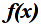

 Graphing
Welcome the the Calculus 3D Solids Program!
Once the equations are graphed, this may help you explore the graph.
- On both the 2D and 3D graph, use the mouse wheel to zoom. Scroll up, and the graph will zoom in, and vice-versa.
- On both the 2D and 3D graph, click and drag with the right mouse button to pan the graph around.
- On just the 3D graph, click and drag with the left mouse button to rotate the graph around. It may take a while to get used to rotating things in 3D.
- On both the 2D and 3D graph, hit the 'R' key to reset the view back to its original. This is helpful if you get stuck somewhere.
FAQ
- The original view only shows black. Try zooming out and panning around until you find an axis or the solid itself.
- The discs, shells, or washers are really hard to see :( I'm working on making it easier to see how the discs/shells/washers stack up against one another. Part of this is their appearance. Another part will be the ability to "animate" them stacking up. It might take some time for me...